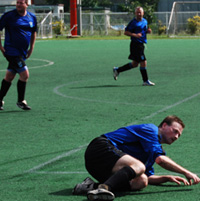
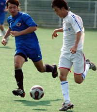
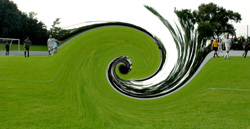
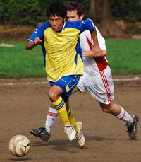

Old Boys 3? Maritizio? Who?
Hachioji Park, Saturday 27th September
I went to the doctor yesterday to ask him what I should do about this increasingly disturbing short-term memory loss. I wish I could remember what he told me. I definitely need some kind of help because by Sunday afternoon large chunks of Saturday's game had just vanished. And I hadn't even had a drink. more ...
TC.
Sense of Déjà Vu as Embassy Squander Another 2 Goal Lead
Hachioji Park, Sunday 28th September
Let’s hope this isn’t habit forming.
For the second time in as many games the Embassy managed to throw away a well deserved, two-goal lead to lose three-two at the final whistle. What perhaps makes this loss all the more frustrating is that this performance was even more schizophrenic than two weeks ago. more ...
RK.
Time Gentlemen, please!
Hachioji Park, Saturday 27th September
Div 3 may occasionally be a wee bit short on skill and speed. This week it wasn’t short of either, but it was short on time. The match between the Jets 2nds and the Stoneds ended after about an hour’s play in a 2-2 draw. more ...
CP.
JETs Off the Mark
Hachioji Park, Saturday 27th September
The Saitama Jets claimed their first points of the season, twice coming from behind, to record a vital win over a rugged and physical French side at Hachioji Park.
The last time the sides met, in season 4, the Jets sent the French down to Division 2 in an ill-tempered game. more ...
RK.
Hibs Continue Scoring Spree.
Hachioji Park, Saturday 26th September
The Hibs have had the better of the Geckoes over the past few seasons, compiling over twenty goals in the last four meetings, but we’d heard rumours of their renewed squad including a tall kiwi midfielder and a few speedy and skilful Japanese. We’d also noted their draw against the YCAC and win over the Swiss; so the Hibs went into this match expecting a tough and close game. more ...
BC.
|  |
|
Albion Old Boy's Naill Flaherty, feels those aging joints in his introduction to Div 2.
|
Old Boys Match Vags in Div2 Debut
Hachioji Park, Saturday 20th September
Typhoon number 13 had blown through several hours before kickoff, but there was still plenty of wind howling through aging lungs as the Albion Old Boys huffed and puffed their way to a 4-all draw with BFC Vagabonds in a hard-fought encounter at Hachioji Park.
Though a few of them had to be dragged kicking and screaming out of the relative comfort of Division 3, an impressive number of Seasoned Maestros Of The Beautiful Game had dodged the trip to the glue factory and reported back for the Old Boys' Division 2 debut. more ...
TC.
Swiss Suffer As Hibs Rampage.
Hachioji Park, Saturday 20th September
To say the Swiss have suffered from the loss of key players recently is like saying that global financial markets are currently experiencing a bit of a rough trot. While two seasons ago the Hibs lost a large chunk of our electrifying 05/6 five goal a game squad, we were very fortunate to recruit some great players to step in soon after. more ...
BC.
Jumpers for Goalposts?
Hanno, Saturday 20th September
10:30 AM, morning break. - We stream onto the playground for our 15-minute kick around. At least 5 minutes are spent picking teams. If you're big or quick or mates with today's 'captain' you get picked first, weedy, smelly or funny-looking and you're one of the dregs that both captains try not to get lumbered with. more ...
GG.
BFC Open Title Defence with 5-0 Win
|  |
|
Twinkle toes Yamagishi dances round a JET
|
Hachioji Park, Sunday 14th September,
Different captain, same sort of result. Early days but Morson's first competitive game in charge ended in a 5-0 evisceration of Saitama JETs in sweaty conditions more suited to sucking ice lollies down at the beach. There was also nice symmetry for BFC in reversing that humiliating Cup final defeat by the Little Green Men.
Aranda scoring twice, once from the spot, and Day snapping up one from close range continued a theme from last season but BFC will do well to produce a better goal than Taka's scorcher which put BFC 2-0 up.
more ...
ST.
Same Old Story
Hachioji Park, Sunday 14th September,
It wouldn`t have been inconceivable for this game to have ended up 9-9. In an open andentertaining affair under the floodlights in Hachioji, Sala finally edged it, but the Embassy showed more than enough to suggest that this season is one of great promise. more ...
RH.
Jets 2 Follow Form Book
Hanno, Sunday 14th September
After a well-deserved mauling by the Panthers in their first league outing, the Saitama Jets 2nds returned to form with a 3-0 win over the hapless Guarana Republic. Having squeezed past the men in green 4-0 and 3-0 last season, the Jets could be forgiven for starting this game full of confidence. In fact, for the first 15 or 20 minutes, Guarana barely got out of their own half. more ...
GG.
Dutch Courage
Fuchu no Mori, Saturday 13 September
It was with trepidation that the Dutch Embassy prepared their debut for the 08/09 season facing the Jetro team, always a solid competitor in the past. Captain Toshi assembled a squad made mostly of old faces with the artificial augmentation of a couple of players rumored to be of Heisei Umare. more ...
LVL.
YCAC Finally Break Sala Jinx.
|  |
|
Sala get sucked into YCAC's Black Hole, with Tyson Masar at the controls, ending an era.
|
Hodogaya Park, Saturday 6th September,
Wednesday the 10th was the date on the whole teams lips pre match. The date of course that the Physicists at CERN were due to flip the switch on the Large Hadron Collider sending subatomic particles whizzing around a 17 mile ring somewhere under the earth of Geneva. The debate was heated as the older guys put in contact lenses and strapped themselves into orthopedic knee braces while the youngsters were mostly rehydrating and wondering whether to tell the older guys that their wives had been padding their housekeeping in the Swingers bar in Shinjuku the night before more ...
ST.
Samba Beat Inspires Geckoes Feet
|  |
|
Chasing the game, Swiss' Ben Andrist tries to catch Masa Kenmochi to no avail.
|
Yoyogi NHK, Saturday 6th Sept,.
A sunny September Saturday in Yoyogi was the scene for the Geckoes second and Swiss' first TML fixture of the new season. As the teams made their way to the pitch from Harajuku station they couldn't help but notice two important events taking place nearby, first the Tokyo Girls Collection.....ah....erm...and, oh yes, more importantly of course the Brasil Festival in Yoyogi Park. At one stage we actually had to squeeze through as a drum and dance troop who had come all the way from Brazil (though looked suspiciously local) had basically blocked the road and was putting on a good pre-game show. Good start for the Geckoes even before kickoff knowing we'd be pulling on yellow kits before long.
Manager Simon Bromwell, his second game in charge, had a young team looking fit and ready to samba dance the ball right through the Swiss. A far cry from the days of old when the closest thing considered Brazilian dancing by the Geckoes was after midnight in the pong, thinking they look good in the mirror doing the robot next to (the soon to be scooped up by Ronaldo) Isabella...so I'm told! more ...
PZ.
|